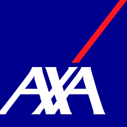

Klare Einschätzung statt Chaos nach dem Schaden.
Wir schauen den Schaden sauber an, besprechen mit Ihnen die Situation und zeigen transparent, welche Arbeiten für die Instandsetzung sinnvoll sind.

Nach einem Schaden zählt vor allem Klarheit. Wir unterstützen Sie bei der Einschätzung, kümmern uns um die nötigen Schritte und sorgen dafür, dass Ihr Fahrzeug sauber und fachgerecht instand gesetzt wird. Bei Unfallschäden in Schlieren und im Raum Zürich begleiten wir Sie von der Schadenaufnahme bis zur Reparatur.
Nach einem Schaden braucht es nicht nur Reparatur, sondern zuerst Struktur. Wir helfen dabei, den Schaden sauber einzuordnen, die nächsten Schritte verständlich zu machen und Ihr Fahrzeug fachgerecht wieder instand zu setzen.
Wir schauen den Schaden sauber an, besprechen mit Ihnen die Situation und zeigen transparent, welche Arbeiten für die Instandsetzung sinnvoll sind.
Wir nehmen den sichtbaren Schaden sauber auf und verschaffen uns einen klaren Überblick über den Zustand des Fahrzeugs.
Sie erhalten eine ehrliche Rückmeldung dazu, was optisch, technisch und für die weitere Planung relevant ist.
Nach der Abklärung kümmern wir uns um die fachgerechte Instandsetzung und die saubere Wiederherstellung des Fahrzeugs.
Beschädigte Bereiche an der Karosserie werden gezielt bearbeitet, damit Form und Zustand wieder stimmen.
Wenn Oberfläche oder Optik betroffen sind, sorgen wir für eine Lösung, die sauber zum Gesamtbild des Fahrzeugs passt.
Nach einem Unfallschaden geht es nicht nur um die Reparatur, sondern auch um Klarheit in der Abwicklung. Wir helfen Ihnen dabei, den Schaden sauber einzuordnen, übernehmen auf Wunsch die ersten Abklärungen mit der Versicherung und besprechen mit Ihnen die nächsten Schritte transparent und verständlich.
Wir unterstützen Sie bei der Kommunikation, nehmen Kontakt auf und helfen dabei, den Schadenfall sauber weiterzuführen.
Wenn eine Auszahlung oder andere Lösung im Raum steht, besprechen wir mit Ihnen offen, was sinnvoll ist und wie weiter vorgegangen werden kann.
Von der ersten Einschätzung bis zur Instandsetzung halten wir die Abwicklung nachvollziehbar, direkt und möglichst unkompliziert für Sie.
Wenn ein Austausch Ihrer Frontscheibe nötig ist, begleiten wir Sie sauber durch den Ablauf und besprechen mit Ihnen auch mögliche Cashback-Optionen im Rahmen der Abwicklung.
Auch wenn Ihre Versicherung hier nicht aufgeführt ist, unterstützen wir Sie selbstverständlich gerne bei der weiteren Abwicklung.


Sie möchten einen Termin vereinbaren oder eine ehrliche Einschätzung zu Service, Reparatur oder MFK? Dann kontaktieren Sie uns und wir melden uns schnell, klar und unkompliziert zurück.
Teilen Sie uns Ihr Anliegen mit und wir melden uns so schnell wie möglich mit einer Einschätzung, einem Terminvorschlag oder den nächsten Schritten zurück.